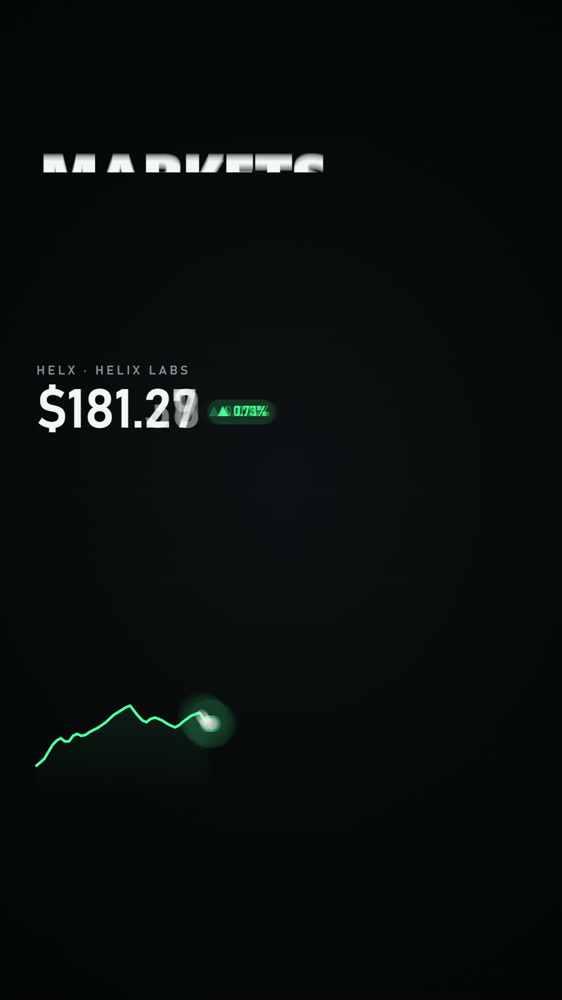
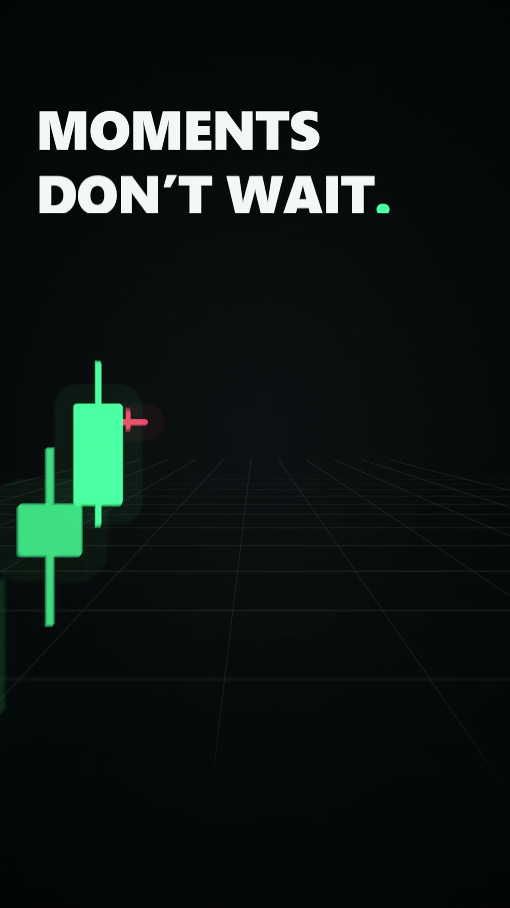
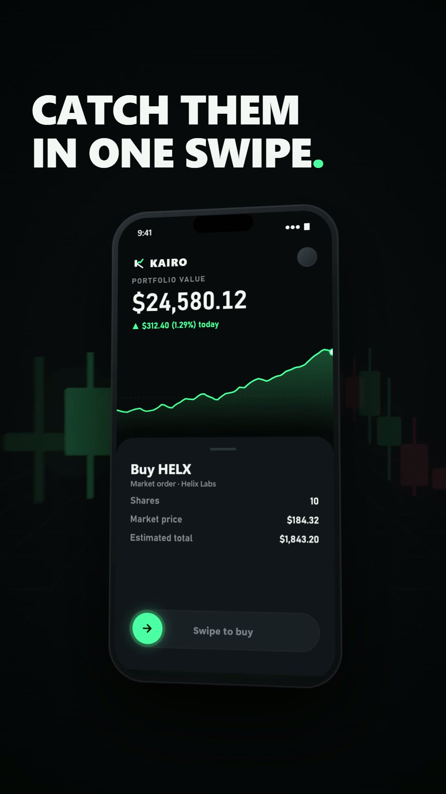

← All work
App launch
KAIRO
“Catch the moment.” A launch film for an invented trading app: a price line becomes a dive through a 3D candlestick chart, which lands inside the phone for swipe to buy, order filled and a price alert.
Format15s · 9:16
RoleConcept, UI design, animation, sound
BriefSelf-initiated
Year2026
The brief
Finance apps all show the same phone and the same chart. Find one idea a viewer remembers, the moment a price moves, and make the product the answer to it. Black, signal green, one bold grotesk.
My role
Concept, UI design, animation, sound.
Tools
Made in code: HTML canvas and 3D, frame-by-frame render with motion blur · Original sound design
Self-initiated brief: KAIRO is a fictional project made for this portfolio.
Process
Styleframes


